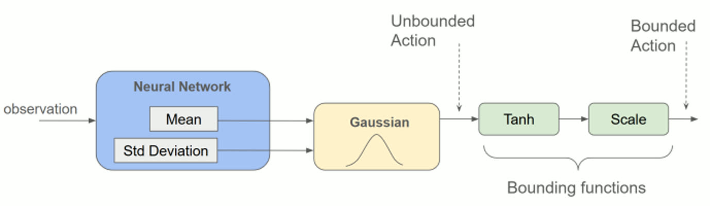
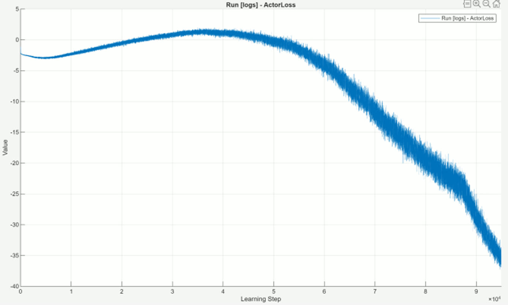
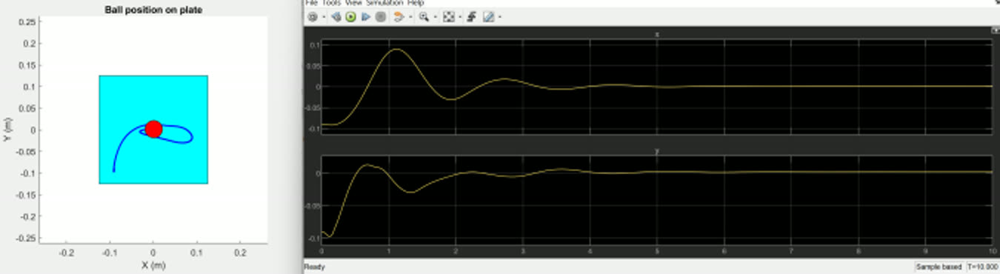
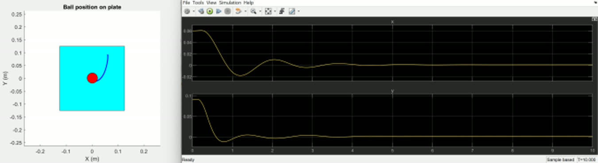

Teaching a Plate to Catch a Ball, Without Telling It How
A Soft Actor-Critic agent learns to balance a rolling ball at the center of a tilting plate — no model, no gain tuning, just torque on two joints and a reward. The agent sees a 22-dimensional observation, acts in a continuous 2-D torque space, and is trained against Simscape Multibody physics with real contact forces. The interesting result isn't that it balances the ball. It's that after 6000 episodes it still refuses to settle on a single way of doing it — which, for SAC, is the algorithm working as designed.

Maximize reward. Also, stay as random as you can afford to.
Standard RL maximizes expected return. Soft Actor-Critic maximizes return plus the entropy of its own policy — it is explicitly rewarded for keeping its options open. That single extra term is the whole character of the algorithm: it drives broad exploration early, prevents premature collapse onto one mediocre strategy, and produces a stochastic policy rather than a deterministic map from state to action.
// the entropy bonus H, weighted by α, is what separates SAC from ordinary actor-critic
The choice suits this problem specifically. Balancing a ball on a plate admits many valid control strategies, and exploring that space with deterministic methods is notoriously sample-expensive given high-dimensional observations. SAC is off-policy, so it reuses every transition from a replay buffer instead of throwing experience away after one gradient step — sample efficiency being the reason it's worth the extra machinery.
Crucially, α is not a fixed hyperparameter here. It's tuned automatically during training, driving the policy's entropy toward a target rather than holding the exploration/exploitation trade-off constant — the "dynamic entropy tuning" the study set out to investigate.
Two critics, one Gaussian actor, and a tanh to keep it physical.
The agent is MATLAB's rlSACAgent with two parameterized Q-value
critics — the twin-critic trick, where the minimum of the two
is used to form targets, so the notorious overestimation bias of a single Q network gets
cut down. Target critics track the main critics slowly through a smoothing factor,
and the actor updates less often than the critics.
The actor is a Gaussian policy with two output heads: one for the mean μθ(S), one for the standard deviation σθ(S), with a ReLU on the latter to keep it non-negative. Actions are sampled from that unbounded distribution and then squashed through tanh and scaled into the physical torque limits. The order matters: entropy is computed on the unbounded Gaussian, while the environment receives the bounded action.


22 numbers that describe a ball on a plate.
The plant is a Simscape Multibody model: two cylindrical joints with zero link lengths — J1 rolling about X, J2 pitching about Y — driven directly by the agent's torques. Ball state comes from a 6-DoF joint block, and the ball-plate interaction is a real spatial contact force block rather than a scripted constraint, so rolling, slipping, and leaving the surface are all things the physics can do. (This is deliberately the simplified stand-in for a 6-DoF arm carrying the plate.)
The observation vector is where the modeling judgment shows. Joint angles enter as sine and cosine pairs rather than raw angles, because a network that sees an angle wrap from 2π to 0 will treat two nearly identical configurations as maximally different. Plate orientation uses quaternions for the same reason at the 3D level — no gimbal singularities, no discontinuities. Previous joint torques are fed back in, giving the agent a sense of what it just did, and ball radius and mass are included so the policy is conditioned on the physical constants rather than silently memorizing them.


Three terms, and all the difficulty lives here.
The reward is a composite of one incentive and two penalties. Ball position is rewarded exponentially in distance from the plate center — a shaped signal that keeps rewarding progress rather than paying out only on success, which matters enormously when the agent starts from random flailing. Plate tilt is penalized by squared tilt angles derived from the quaternion, discouraging the degenerate strategy of violently pitching the plate. Control effort is penalized by squared torque, pushing toward energy efficiency.
| Term | Form | Purpose |
|---|---|---|
| Ball proximity | exponential in distance to center | dense progress signal toward the goal |
| Plate orientation | −(squared tilt angles from quaternion) | discourage extreme plate attitudes |
| Control effort | −(squared joint torques) | energy efficiency, smoother actuation |
This is the part the report is most honest about: reward design can only be validated iteratively. Unlike a cost function in LQR — where the weights have interpretable units and the resulting controller is provably optimal for them — there's no way to know a reward shaping is right except to train on it and inspect what the agent learned to exploit.
Three thousand episodes of failing on purpose.
Training ran 6000 episodes, up to 6000 steps each, with a greedy-policy evaluation every 100 episodes (5 evaluation episodes each) and a stopping criterion of 700 average reward. With asynchronous parallel workers on an RTX 4090, the run took about 3 hours and peaked at 660.48 — approaching, but not reaching, the target.
The shape of that curve is the finding. For roughly the first 3000 episodes the agent produces essentially no useful control — and that isn't a bug, it's the entropy bonus being paid out. The agent is being explicitly rewarded for trying diverse ways to fail before committing to anything. The cost is real: SAC needs substantially more wall-clock training than deterministic alternatives on this problem.


The critic loss deserves the attention it gets in the report, because it looks like failure and isn't. It spikes and never trends down — the critics keep meeting states exploration hasn't shown them before, and the Adam-tuned entropy weight shifts the target underneath them as it goes. Actor-critic training never promised critic loss minimization; the critic's job is to supply a useful gradient, not to be well-fit. Reading that plot as "the model isn't learning" is one of the classic misreads of these methods.
Same start, different solution, every time.
The trained agent balances the ball — and does it differently on repeated runs from identical initial conditions. From (x₀, y₀) = (0.05, 0.09) the ball takes a visibly different path to the center on separate trials. That's not noise in the plant; it's the policy. A stochastic policy samples its actions, so a converged SAC agent is a distribution over strategies, not one strategy.
It also generalizes across starting states: (0.04, 0.08), (−0.09, −0.09), and (0.06, 0.09) all recover to the center, including the diagonal case where both axes must be corrected simultaneously. The report's expectation is that with more training the trajectory spread would narrow as the policy approaches optimality — the diversity being partly incomplete convergence, partly the entropy objective doing exactly what it's told.



When not to reach for this.
A ball on a plate is a problem PID or LQR solves in an afternoon, with stability guarantees SAC cannot offer. Three hours of GPU training for a controller with no proof of anything is not a trade you'd make in production — and the value of running the experiment is knowing precisely why you wouldn't.
| Cost | What it actually means here |
|---|---|
| Hyperparameter sensitivity | learning rates, entropy coefficient α, target update rate τ all need careful tuning |
| Sample complexity | ~3000 episodes before useful behavior; 6000 total for a peak of 660.48 |
| Reward design | no analytical validation — shape it, train, inspect what got exploited, repeat |
| Compute | deep networks and replay vs. a handful of gains in a classical controller |
What SAC buys in return is the thing classical control can't give: a policy for problems where the model is unavailable or the strategy space is genuinely unknown, learned from interaction alone, and delivering multiple viable solutions rather than one. That optionality is a robustness property — when one route is blocked, a stochastic policy already knows others.
What this project proves.
Entropy regularization is a design decision with visible consequences. The 3000 flat episodes and the trajectory diversity from identical starts are the same mechanism seen from two ends — you don't get the second without paying for the first. Representation is where the domain knowledge goes. Sin/cos angles, quaternion attitude, and fed-back previous torques aren't incidental preprocessing; they're the difference between a learnable problem and one with artificial discontinuities. And a loss curve is not a scoreboard — the critic loss never converged while the policy was steadily improving, and understanding why is the difference between debugging a training run and misreading one.
Team project for EEE 587 Optimal Control (Team 10), ASU — with thanks to Prof. Jennie Si. All figures and metrics from the team's final report, linked above.